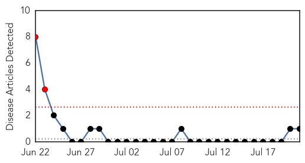

Meningitis
30-Day Web Trend
3 alerts, 0 warnings

30-Day Twitter Trend
0 alerts, 0 warnings

Article Locations

Article Confidences

Top Articles:
- 0.820
- Gov. Kasich signs bacterial meningitis vaccine requirement
- 0.812
- Kasich signs bacterial meningitis vaccine requirement
- 0.724
- Press Herald sues to force state to identify schools that had chickenpox outbreaks
- 0.714
- Press Herald sues to force state to identify schools that had chickenpox outbreaks
- 0.572
- Virginia teen who died suddenly had meningococcal meningitis
- 0.550
- Pfizer is expanding its vaccine portfolio, developing others
Top Tweets:
-
No tweets found for Jul 21, 2015
Bubonic Plague
30-Day Web Trend
2 alerts, 0 warnings

30-Day Twitter Trend
0 alerts, 0 warnings

Article Locations

Article Confidences

Top Articles:
Top Tweets:
-
No tweets found for Jul 21, 2015